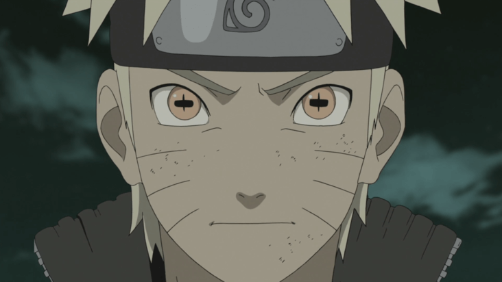
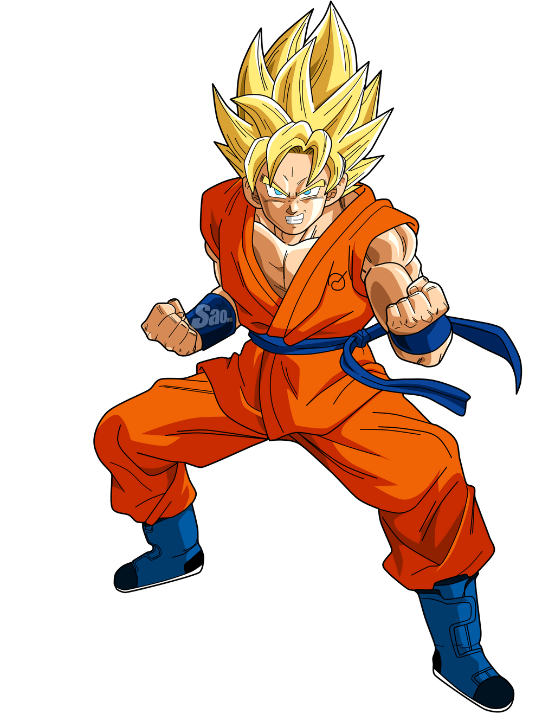
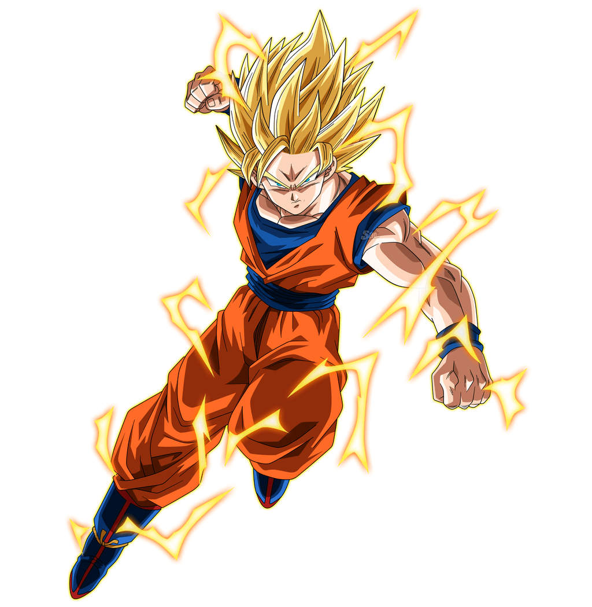
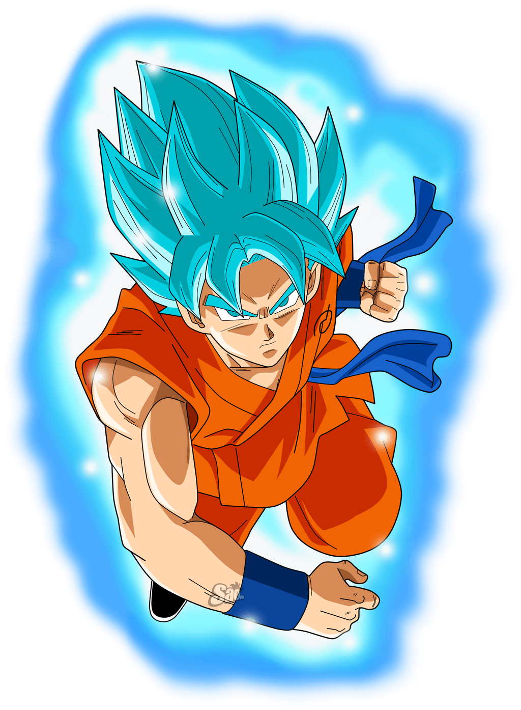
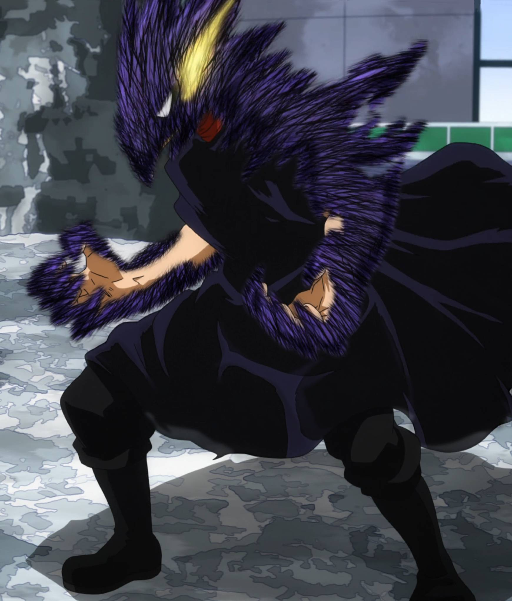
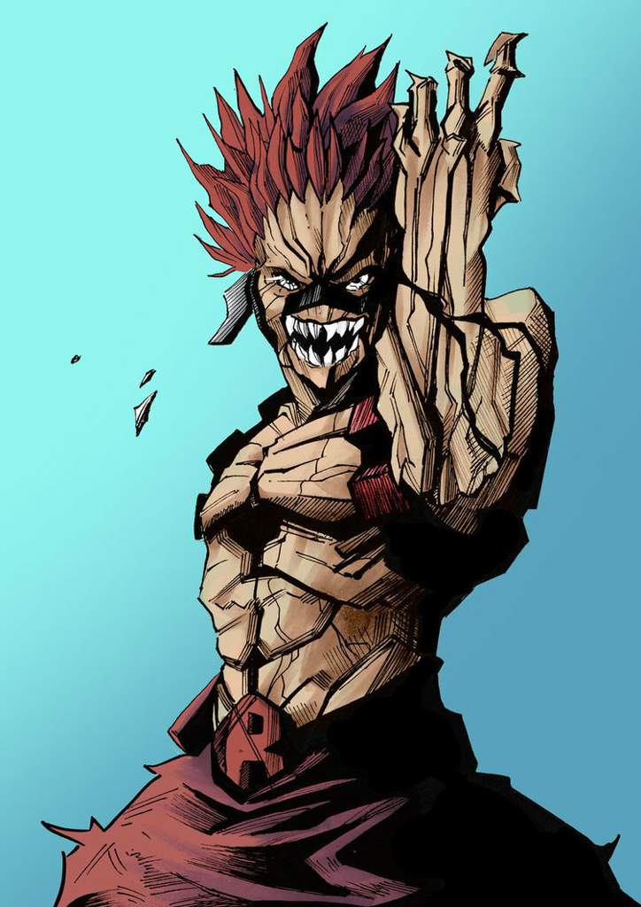
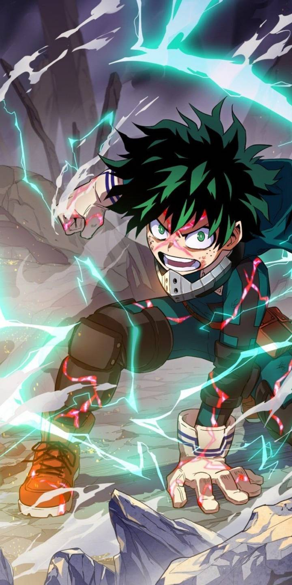
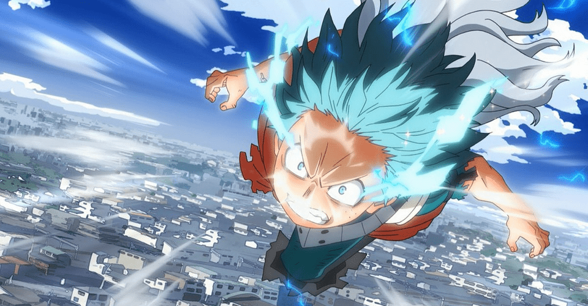

Modes
Modes which can be used in battle
Modes are power-ups which are used in battle. They help to give a boost to a player's skill damage, damage resistance and more. There are different modes with many different uses. There are more defensive modes and more attacking ones. Some modes can be bought while some others cannot. Multiple modes cannot be used simultaenously(i.e only one mode can be used at a time).
Ninja Modes
1st Gate of Opening: Your opponent losses 1cp for every move he plays. Take a move you have already used before, excluding your KKG(you can either use it in the same turn you played this or save it for later). 3cp to activate. 23xp to buy.
2nd Gate of Healing: You can copy three of your opponent's jutsus, one in each turn, but you cannot use it in that turn(modes and KKGs cannot be copied). Gain 1cp after copy. 3cp to activate. 26xp to buy.
3rd Gate of Light: You are allowed to nullify your opponent's previous jutsu but you lose 2hp & your opponent loses 1hp and 1cp in the process. This mode cannot be neglected. 4cp to activate. 29xp to buy.

Rage Mode: All damage you cause to your opponnet are increased by 1. 4cp to activate, 6cp if you want to increase the damage by 2(except physical attacks). 35xp to buy.

Sage Mode: Gain double of any cp you receive, take all your used jutsus back(cp based) and the damage of those taken back are doubled, but you pay double the cp. 5cp to activate. 45xp to buy.

Sage Of Six Paths Mode: Gain 1cp in every turn, KKG related moves as well as time skills(except modes & KKGs) do not affect you. All damage caused to opponent is increased by 1. Cannot be bought without sage mode. 5cp to activate, do not use cp if already in Sage mode. 37xp to buy.

Cursed Mode: Gain 3cp, each turn give damage to you and your opponent's life according to each players cp, damage cannot be more than 4. This continues until this mode is destroyed. 4cp to activate. 32xp to buy.

Yellow Flash Mode: All opponent's direct attacks delay a turn before they cam affect you. You can use 3cp to defend against the damage and another 3 to give the opponent that damage. Max damage that can be redirected is 5. Max negligible damage is 6. 5cp to activate. 25C to buy.
3 Tomoe Sharingan Mode: You lose 1cp every of your turn end, every turn, opponent must tell user their next move they will use in their next turn in the form of the skill type(neg, time, atk, def. The skill name should not be said) and must use it accordingly in their next turn. Only works on one opponent. This mode ends when your cp reaches 5 & below. Skilled rank needed. Can only be used if you have Sharingan KKG. 4cp to activate. 30xp to buy.

Tenseigan: When your opponent uses a skill in their turn, you can decide to pay double the cp for the move the opponent is about to use and seal it(does not work on KKGs, modes & skills that do not make use of cp). Sealed skills cannot be used until opponent's life reaches 7 and below. Skilled rank needed. Can only be used if you have Byakugan KKG. 2cp to activate. 20C to buy.

Lightining Chakra Mode: All skills that give 4 and above damage to you are reduced by one, all your attacks are increased by 1. Neglect skills used by opponent do not work on you. This mode ends when your cp is 6 and below. 5cp to activate. 50xp to buy.
Saiyan Modes
Limit Breaker: Every turn, bring one used skill back. Maximum number of skills to be brougt back is 3. A skill can only be brought back once, KKGs cannot be brought back This mode ends when your cp reaches 3 and below. 3cp to activate. 35xp to buy.

Super Saiyan 1: Gain 3cp, copy a used move from your opponent's card and give it to you or a member of your team. All damage you take from attacking skills are reduced by 1. 4cp to activate. 28xp to buy

Super Saiyan 2: Every end turn, Remove 2hp from all players that have other modes or beasts in the battle. All damages done by your attacking skills is increased by 1. You lose 1cp every of your end turn. 2cp to activate, do not use cp if already in Super Saiyan 1 mode. Cannot be used without having Super Saiyan 1. 37xp to buy.
Super Saiyan 3: For all time skills, you get 2cp for each of them every of your turn. You lose 1cp every one of your end turn when no time skills are active. End this mode when your cp reaches 3 or below. Expert Level Needed. 3cp to activate, do not use cp if already in Super Saiyan 2. Cannot be used without having Super Saiyan 2. 30xp to learn.

Super Saiyan 4: Any neglect skill used by your opponent is neglected(if it can be neglected) and gives you 2hp and 2cp. All your attacking skills damages are increased by 1. All damage you receive from attacking skills is reduced by 1. You lose 1cp every of your turn end. You can remove yourself from this mode only when you are about to end your turn(even if you play a skill in that turn). This mode automatically ends when your hp reaches 5 or below. Expert level needed. 6cp to activate, do not use cp if already in Super Saiyan 2 mode. Cannot be used without having Super Saiyan 2. 49xp to buy.
Super Saiyan 5: All your attacks are multiplied by 1.5. All damage you take from attacking skills is reduced by 1. You lose 1cp every turn. 5cp to activate, do not use cp if already in Super Saiyan 4 mode, cannot be used without having Super Saiyan 4 mode. 45xp to buy.

Super Saiyan God(Super Saiyan Red): All opponent's attacks are divided by 2 while in this mode. Lose 1cp every turn. This mode automatically ends when you have no cp left. Expert level needed. 4cp to activate. Cannot be bought without having SS1 & SS2. 57xp to buy.

Super Saiyan Blue(Super Saiyan God Super Saiyan): All your attacks damage are increased by 2(except weapoons). All damage you receive from attacking skills are divided by 1.5. You lose 1cp every turn. This mode automatically ends when your cp reaches 5 or below. Expert Level needed. 5cp to activate. Cannot be bought without having SS1, SS2 & SSG. 68xp to buy.

Legendary Super Saiyan 1: You gain 4cp. All damage you take from skills that use cp is reduced by 2, all your attacks are increased by 1. This mode automatically ends when your life is 5 or below. 5cp to activate. It is only gotten by chance.

Legendary Super Saiyan 2: You gain 5cp. All damage you take from skills that use cp is reduced by 2, all your attacks are increased by 2(except weapons). Lose 1cp every of your end turn. This mode automatically ends when your life is below 5. Beginner level needed. 4cp to activate, do not use cp if already in LSS1. 55xp to buy.
Dragon Force: All your attack skills damage is increased by 2(except weapons). 4cp to activate. 35xp to buy.
.png)
Ultra Instinct: All opponent's attacks delay a turn before affecting you, and their damage is reduced by 1.5. Lasts for 3 of opponent's attacks, lose 1hp every one of your end turns. Elite Rank Required. 4cp to activate. 45C to buy.
.png)
Mastered Ultra Instinct: All opponent's attacks delay a turn before affecting you, and their damage is reduced by 2. Lasts for 4 of opponent's attacks, lose 1.5hp every one of your end turns. Elite Rank Required. 4cp to activate. 55C to buy.
Wizard Modes

Dragonification: A user has a dragon seed which turns him/her into an actual dragon. Users attacks are added by 2(except weapons). The dragon seed also gives the user 4cp. 7cp to activate. 37xp to buy.
Enchantment: Hellblaze Mode: While in this mode, your opponents cannot regenerate. You conjure demonic black flames which increase your battle damage by 1. Your opponent loses 1hp in their end turn while this mode is active, users killed by this effect cannot be revived by any means. This mode ends when user's cp is below 5. 4cp to activate. 45xp to buy.

Full Dragon Force: This is the ultimate dragon slayer state that can be attained. In this mode, one has dragon-like scaly skin. All battle damages are reduced by 2. All attacks are increased by 1. 4cp to activate. 39xp to buy.

Assault Mode: Wizards in this mode access the power of the Demon King's top successor. Attacks which use cp are buffed by 2, opponents attacking moves which use cp are reduced by 2. While in this mode you lose 1hp every end turn. This mode ends when either users cp or hp is 5 or below. 5cp to activate. 45xp to buy.

Lightining Fire Mode: While in this mode, you are allowed to play 2 moves in a turn twice, all attacks which use cp are increased by 1. mode ends when users CP is below 4. 4cp to activate. 46xp to buy.

Dragon King Mode: This is a unique ability possessed by a wizard. The potency of this skill increases the damage of the user by 1. Opponent loses 1hp every end turn of theirs, opponent cannot die from this. This skill prevents neglect spells from affecting the user. 4cp to activate. 42xp to buy.
BREAKDOWN PHENOMENON: The user grows a set of black wings with the aura. In this mode the user has three abilities. 3cp to use.
• SUMMON: Summon an army of spectres to fight alongside them. The spectres can be used as shield to block attacks and protect the user. Summon 2 golems of 1hp and 2 damage each. 3cp to use
• BLACK SUN: The user summons a black sun which erases everything in range except the user. Give opponent 4 damage. Cannot be neglected. 3cp to use. 3cp to use
• DRAIN: The user has the ability to drain anybody’s magic and aura. Each turn remove 1cp from your opponent and add to yours. 2cp to use.
The user’s magic abilities also increase due to the condition of losing control of their magic. All users attack that use cp are increased by 1. User loses ½ of their current HP after 5 of their end turns. 60C to buy
CREATION: This mode allows the use of a Magic known as Outer Alchemic, which allows the user, via rules of material exchange, to create weapons for his/her own use. While in this mode user can create up to 4 weapons of their choice. Weapons potency is reduced by 1. 4cp to use. 30xp to buy.
Imperium: Rule Control:This mode gives the user the ability to copy and erase other magics. User has the ability to neglect up to 3 opponents moves, including attacks which give 5 damage and below and make use of that move in another turn. You still pay for the cp of the move when neglecting it, but not when using it. Lose 1cp every end turn while this is active. 3cp to use. 50C to buy
Qurik Modes

Black Ankh: Take 1cp every one of your end turn from other players that have any modes in the field. All your attacks do 1 additional damage. 3cp to activate. 30xp to buy.

Unbreakable: While in this mode, all opponent attacks that use cp are reduced by 2. Gain 1hp every time you attack your opponent. 4cp to activate. 40xp to buy.
Stress Output Burden: Every time an opponent uses a move that uses 4cp and above, they lose 1hp and if an attacking skill is used, its damage is reduced by 1. 4cp to activate. 35xp to buy.
Roaring Rage: All your attack skills damage is increased by 2(except weapons). 4cp to activate. 35xp to buy.

Full Cowl: When this mode is activated, all cp-based attacks are increased by 1 and all cp-based damage you receive is reduced by 1. 3cp to activate. 34xp to buy.

Full Cowl-100%: When this mode is activated, you lose 1hp. All attacks are increased by 1 and all damage you receive is reduced by 1. Gain 1cp every one of your end turns if any mode or beast that doesn't belong to you is active. 4cp to activate. 44xp to buy.